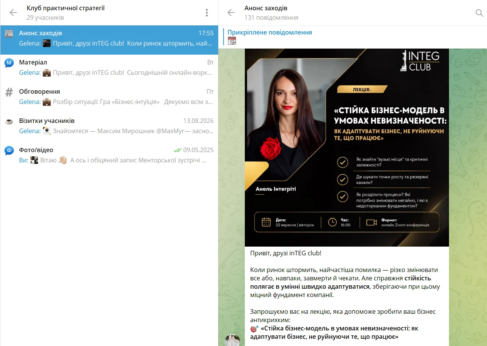
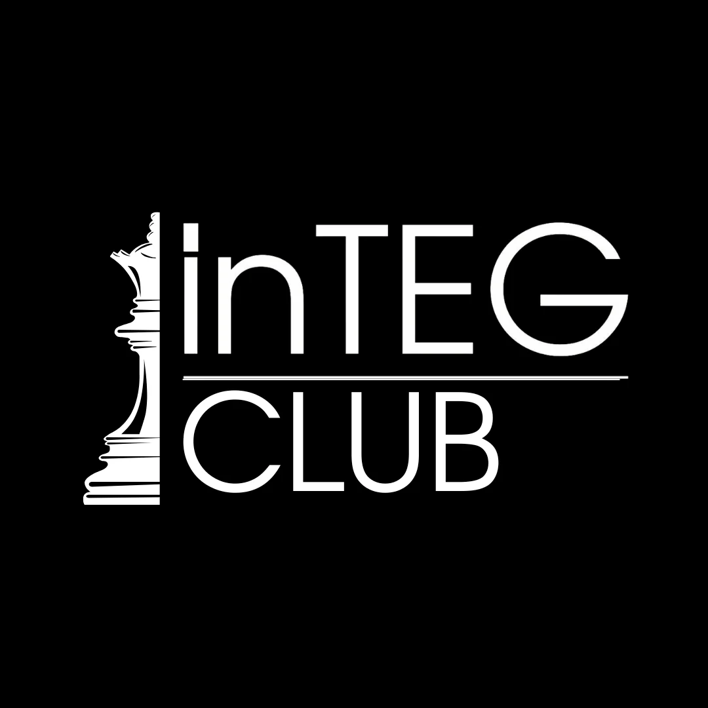

Річна програма розвитку бізнесу, практичні воркшопи, майстермайнди, експертні зустрічі та спільнота підприємців.
Учасники inTEG Club протягом року послідовно проходять ключові складові бізнесу: від бізнес-моделі та клієнта до фінансів, команди, процесів, стратегії та масштабування.
Кожна тема має привести не просто до нових знань, а до відповіді:
«Що саме я маю змінити у своєму бізнесі?»
Розбираємо, на чому насправді тримається бізнес: клієнт, цінність, продукт, канали, доходи, ресурси, витрати та партнери.
Перевіряємо, наскільки продукт відповідає реальному запиту ринку та за що клієнт готовий платити.
Перетворюємо бажання та ідеї власника на конкретні пріоритети, цілі й план дій.
Вчимося бачити не тільки виручку, а й витрати, прибуток, фінансові точки контролю та економіку рішень.
Визначаємо, де бізнес залежить від ручного управління власника та які процеси потрібно систематизувати.
Аналізуємо ролі, відповідальність, завантаження команди та вузькі місця оргструктури.
Працюємо з напрямами росту: продуктами, сегментами, каналами, регіонами та партнерствами.
Переводимо рішення у Roadmap, KPI, OGSM/OKR та конкретні наступні кроки.
Даємо систему, методологію та інструменти для роботи з конкретною темою бізнесу.
Учасники працюють безпосередньо зі своїм бізнесом: заповнюють карти, проводять аудит, визначають проблеми та формують рішення.
Розбираємо реальні запити учасників, знаходимо вузькі місця та використовуємо досвід групи для пошуку рішень.
Обговорюємо реальні ситуації, рішення, помилки та результати підприємців.
Після приєднання учасник отримує доступ до закритого Telegram-каналу/простору inTEG Club. Тут відбувається вся основна комунікація між зустрічами.
У Telegram:
Зустріч закінчилася — робота та комунікація продовжуються в Telegram.

Розуміння, де бізнес створює цінність і заробляє.
Чітке розуміння, куди рухатися далі.
Розуміння доходів, витрат і прибутковості.
Виявлення операційних вузьких місць.
Більш зрозумілі ролі та відповідальність.
Конкретні рішення та наступні кроки для бізнесу.
inTEG Club об'єднує власників і керівників, які стикаються зі схожими управлінськими питаннями: команда, продажі, фінанси, процеси, масштабування, роль власника.
Тут можна не тільки отримувати знання, а й обговорювати рішення, бачити досвід інших компаній, знаходити контакти та нові партнерства.

Участь включає річну програму розвитку бізнесу, зустрічі клубу, практичні формати, матеріали та доступ до закритої Telegram-спільноти.
Приєднатися — 1575 грн/міс.Після оплати ви отримаєте доступ до Telegram-простору клубу та інформацію про найближчі зустрічі.
Приєднуйтесь до inTEG Club та працюйте над розвитком бізнесу системно — разом із підприємцями, які також рухаються вперед.